Excel 提供 17 種圖表，但 80% 的場合只需要 4 種。選錯類型再美也是錯。
先搞清楚：這份資料適合什麼圖？
不知道選哪種圖？照著下面這個決策樹走一遍就對了：


4 種圖表配對什麼資料
| 圖表 | 適合 |
|---|---|
| 柱狀 / 長條 | 比較類別大小（部門業績） |
| 折線 | 時間趨勢（每月收入） |
| 圓餅 | 佔比（市場份額，類別 ≤ 5） |
| 散佈 | 兩變數關聯（廣告 vs 銷售） |
設計三原則
① 一張圖只講一件事 ② 拿掉所有不必要的東西（網格線、3D 效果、陰影）③ 重點顏色用深色，其他用灰色——眼睛會自動看到重點。
走勢圖（Sparklines）
插入 → 走勢圖 → 在單一儲存格內塞迷你折線圖。最適合做 KPI 表格旁邊的趨勢列。
⚠️ 注意圓餅圖類別超過 5 個就難讀，改用橫條圖。3D 圓餅圖永遠不要用。